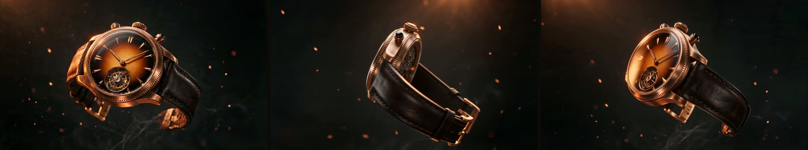
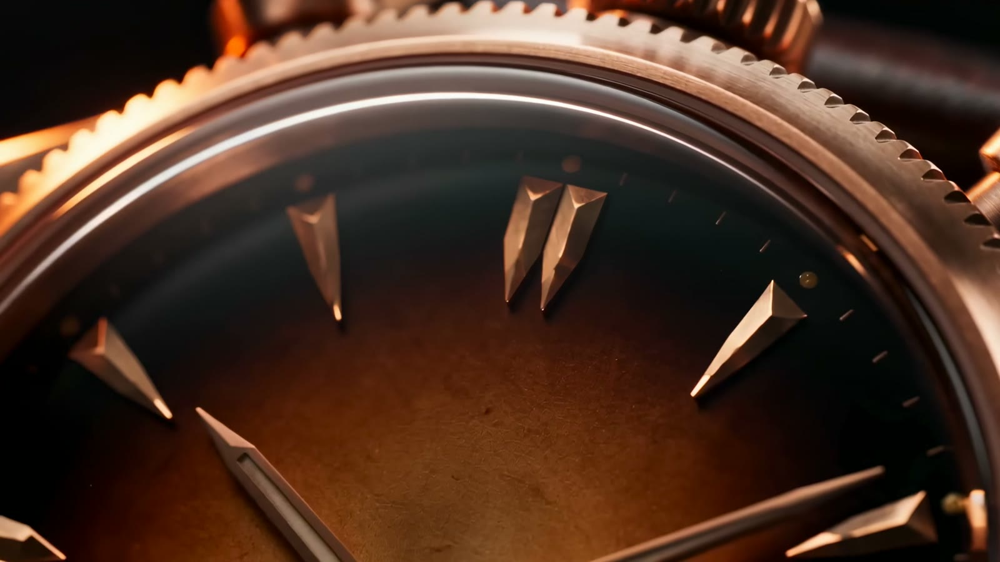

The watch that spins as you scroll
A cinematic, scroll-driven product site for FORGE & FUMÉE — a fictional bronze tourbillon called the Solstice. One AI hero image anchors the product; three Seedance video clips are rendered from it, upscaled with Topaz, cut to frame sequences, and painted to a canvas so scrolling literally rotates the watch. No 3D artist, no video editor — the whole thing is code.
One image, three clips, a site that rotates
The brief was a luxury "3D scroll" product page. The trick that makes it hold together: generate a single hero image first, then force every video clip to reference it — so the watch is identical in all three shots. Everything else is orchestration.
Step by step
The Hero Image
Everything starts with one still. A single prompt to Seedream 5 Pro produced the Solstice — hand-forged
bronze case, smoked amber dial fading to black, a gold tourbillon at six, ember light. Its URL becomes the
reference_image_urls passed to every clip.
Ultra-premium studio photograph of a luxury bronze tourbillon watch, hand-forged case with warm patina, smoked amber dial fading to black, gold tourbillon cage at six, dark leather strap, single forge-glow rim light, drifting embers, charcoal void. No text, no logo.

The Three Shots
From that reference, Seedance rendered three ~8-second clips: a 360° hero orbit, a macro fly-through across the dial, and an exploded assembly that builds the watch from floating parts. All three hold the product identical — the reference image is doing its job.
A gift we didn't prompt: on the back half of the orbit, Seedance invented a plausible skeleton case-back with visible gearwork. It turned three dull seconds of strap into the most mechanical moment of the spin.
Seedance 2.0 · via Kie.ai 328 credits / clip
The Upscale
Every clip was rendered at 720p, then run through Topaz 2× and brought down to a clean 1080p. For a scroll-scrubbed canvas the result is indistinguishable from native 1080p — at less than half the credits.
That decision paid for the whole project's headroom: three clips, three upscales, a hero image and a comfortable retake budget, all inside ~1,500 credits.
Topaz Video Upscale · via Kie.ai ~64 credits / clipThe Assembly
FFmpeg cut each upscaled clip into ~120 JPEG frames. Claude Code wrote the site: a sticky canvas that a GSAP scrub tween paints frame-by-frame as you scroll, Lenis for smooth motion, and glass overlays that fade in and out riding the footage — story beats on the orbit, spec cards on the macro, callouts on the assembly. Editorial sections sit on full-bleed stills with parallax, so the whole page reads as one film.
FFmpeg · frame extraction GSAP + Lenis · scroll-scrub Claude Code · the whole siteFrames from the finished clips
Every image below is a real frame from the generated, Topaz-upscaled footage — and every one of these was cropped straight from the render to become card art on the site. Nothing was generated twice.



What we learned (and what nearly broke)
The honest notes — the parts a tidy tutorial leaves out.
Image models garble engraved text into gibberish. Every prompt ended with no readable text, no logo; the brand name lives in the site's typography instead. One faint invented marking still slipped onto a bezel mid-assembly — invisible at scrub speed, so it stayed.
A headless preview pane suspends requestAnimationFrame, so scroll tests read as "frozen" even when the site works. Verifying the scrub meant manually pumping the clock (lenis.raf + gsap.updateRoot) and hashing the canvas at three depths.
One reference image kept the watch identical across all three clips — the single biggest reason it looks expensive. A softer-but-consistent product always outreads four sharper-but-different ones.
Everything used, and what it did
Generation gateway — one key, every model
The hero image (identity anchor)
The three video clips
720p → 1080p, 2×
Frame extraction & normalisation
Scroll-scrub & smooth scroll
Orchestration & the entire site